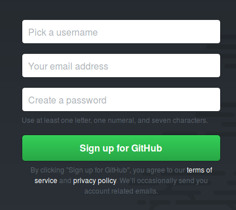
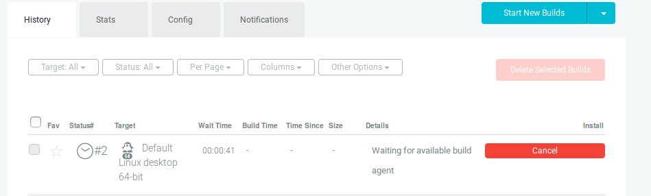

Connecting to github and Unity Cloud build.
Introduction
This tutorial will show you how to create a github repository for the development of your game, as well as how to connect your repository to the Unity build Cloud. This will allow you to work in a project group, manage versions of your game as well as automatically build new versions of your game. Furthermore using the Unity build Cloud, it will allow you to run offline builds for any build target you choose.
Creating a github account and repository

The first thing that needs to be done to allow you to use a github repository for your game is to create a git hub account. Your github account can be used for more than just this tutorial, you might even eventually want to collaborate with other gamers, so choose an account name you will be happy to live with!
Once you have created your account you need to create a repository. A repository is the collection of all the files that will form part of your game. You can do this by selecting the New Project button on your dashboard page. You can also choose the New Repository button on the right hand side of the page, which will show if you have any existing repositories.
On the new repository page you need to fill in a number of details:
Once you have created the repository you will be given a number of options to create or push a new repository. Ignore this for now, but keep the webpage open as it might be useful to refer back to later on.
- Name This will be name name of the repository. You can make it the same as the name of your game.
- Description You can add an optional description.
- Public/Private Select public repository. For our purposes a public repository is fine, and furthermore a private repository requires a monthly payment.
- Initialize repository Do not choose this option. We will be importing our Unity game files once they have been created.
Once you have created the repository you will be given a number of options to create or push a new repository. Ignore this for now, but keep the webpage open as it might be useful to refer back to later on.
Create a new Unity project
Add some objects to your scene, e.g. a cube or a tree, just for testing purposes. If you downloaded the character controllers when you installed Unity you can add those to a camera object, just so that you can navigate around the scene.
Setting up Unity Cloud build
Select the Cloud Build option from the services tab ( as shown alongside). At this point you need to select either an existing organisation or create a new orgnisation (this can just be a one-person organisation).
Now we need to activate the Cloud Build option. For the source control type we choose git (seeing as we created our repository on github. Under the source control url, paste the url that was provided when you created the repository in github. For example I created a repository called liberate-robot, so the url would be: https://github.com/pieterjoubert/liberate-robot
We now need to choose our platform that we will build for. This depends on what platform we want to eventually deliver for. Don't worry about choosing the exact platform at this point as we can always change the build platform later.
Under Target Setup we will leave the settings as is for now. Unless you have used git before and have a number of branches there is no need to change anything at this stage.
At this point if we try and perform a build we cannot yet, as we have not yet pushed our project to github. We need to install git on our computers so that we can perform that various git commands that we need to.
Using git
There are a number of tools we can use to actually make git work besides the commandline application, but for the purposes of this tutorial I will be focusing on using git from the command line. This approach should have the most generalisability.
Git can be downloaded from: here. You can also download a console emulator for windows if you do not like the built-in commandline. Once example is ConEmu
Git allows us to keep track of the progress of our game project at a very granular level. This means we can keep track of changes (additions and deletions) to any file that we are tracking in our project. Not only can we keep track of changes made (and who made them) we can also rollback any changes to a previous version (in the case of bugs within the project).
The git workflow
- Initialize your git repository folder
- Add a remote repository
- Add files to git to track
- Commit any changes to the files
- Push these changes to the remote (i.e. github) repository
The last three steps will occur regularily as we make changese to our code and as we want to push those changes to the repository. If we have setup auto-build on Unity Cloud build, each time we push a change, a new version of our game will automatically be built.
The sequence of commands to run to setup our repository and push our initial changes are as follows (make sure you are in the root directory of your Unity project):
git init
This will initialize a new git project in the directory your are in.
git remote add origin https://github.com/pieterjoubert/liberate-robot
This will add the github repository as the remote origin. What this essentially does is it links the repository on your local machine to the repository to github.
git add .
This will add all of the files in the directory to what is called the staging area. This means that all these files will now be tracked for changes.
git commit -m "Initial Commit"
This commits the changes. This means that the changes are now accepted as valid and part of your project. The -m flag allows us to add a commit messages directly (the value in quotes), without having to edit a commit message in an external editor first.
git push
This pushes the commited changes to the github repository. You might be prompted for your github username and password. At this point we have linked our code on our local machine both to github and Unity Cloud build, so a new build should start automatically. We can sign in to the Unity Developer Cloud to check the progress of our build.

In the image above we can see our current build is waiting in the build queue and wil start soon. Once it is done we will have an executable file, for the chosen platform, available that we can download and run!